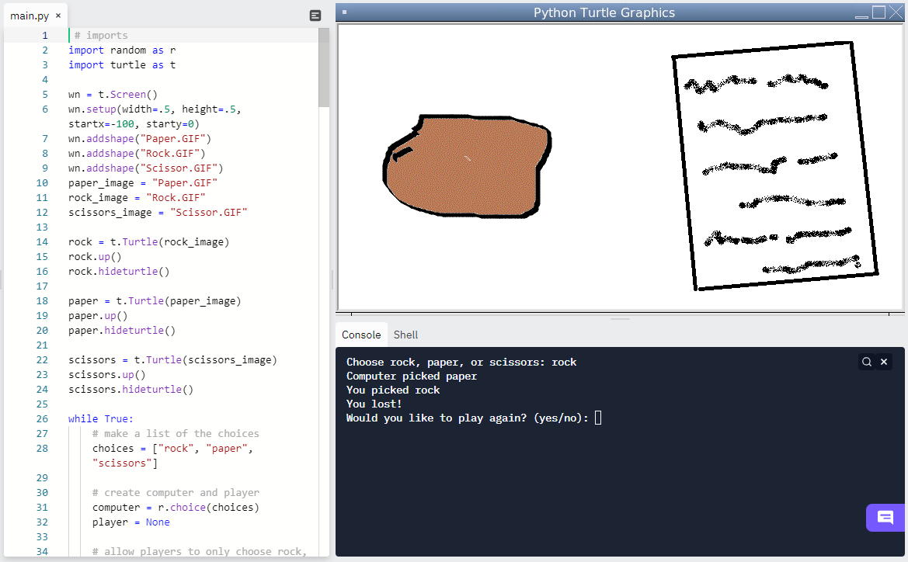

Home
Portfolio
About Me
This is my Portfolio Page!

Tic Tac Turtle

This is my group's project for 1.1.9. We call our project "Tic Tac Turtle". This game is just like the original Tic Tac Toe, but with a twist. Players 1 and 2 are allowed to change the color of their turtle, which is used in replacement of an "X" and an "O". The game rules the exact same, however we implemented a starting screen and a feature where players have to input a coordinate for the column and the row in order to place their turtles.

This is my group's project for 1.2.5. We call our project "Rock Paper Scissors". This game is just like the original Rock Paper Scissors, but we implemented the feature of adding images of rock, paper, and scissors onto the screen. When the player runs the code, the program asks the player to choose rock, paper, or scissors. Once the player types their choice in the console, a computer randomly picks one of the three choices. Depending on the player’s choice and the computer’s choice, the game results in a win, loss, or tie. The program asks the player if they would like to play again. If not, the program stops.